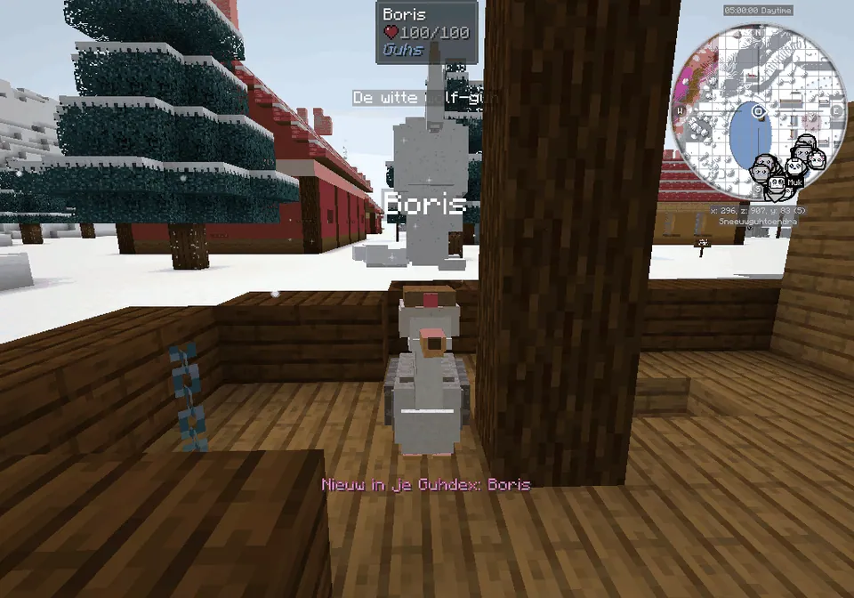
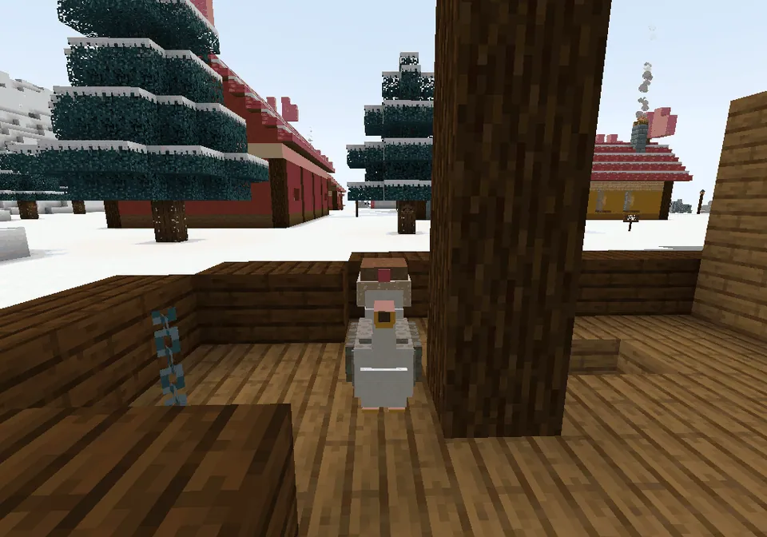
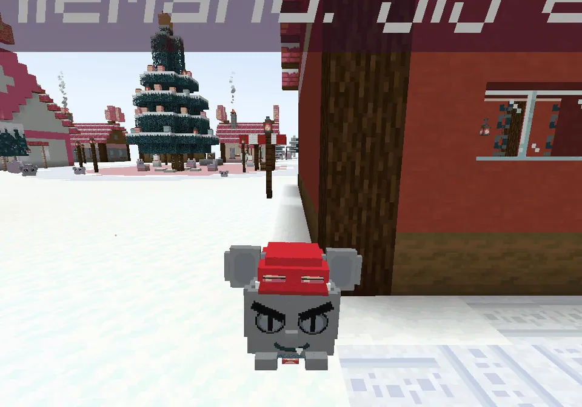
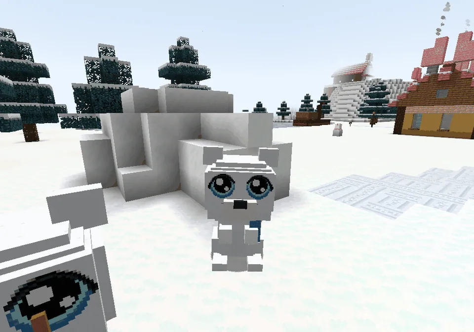
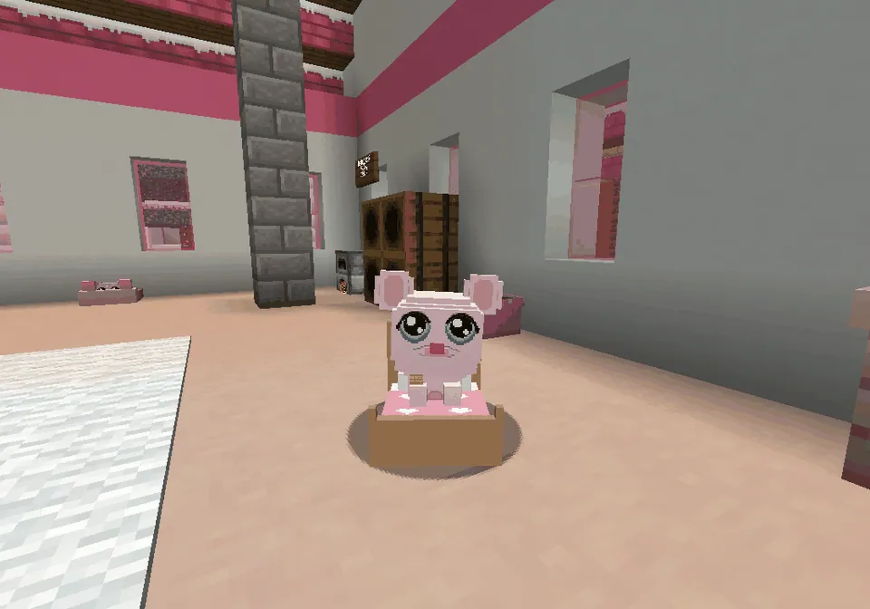
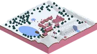
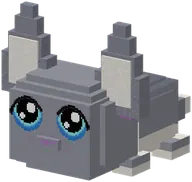
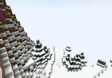

In the snowy guh town of Nomguh, Rosy is ill. Only Baltoguh, half guh and half wolf, can bring the medicine through the storm.
In het besneeuwde guhstadje Nomguh is Rosy ziek. Alleen Baltoguh, half guh en half wolf, kan het medicijn door de storm halen.

The storyHet verhaal
- Meet Baltoguh at the old boat. Steele-Mika laughs at him: a half-wolf can't pull a sled!Ontmoet Baltoguh bij de oude boot. Steele-Mika lacht hem uit: een halve wolf kan toch geen slee trekken!
- Visit Rosy in the ziekenhuisje: the babies have the knabbelkuch and the medicine cupboard is empty.Bezoek Rosy in het ziekenhuisje: de baby's hebben de knabbelkuch en het medicijnkastje is leeg.
- Boris gives you advice: the medicine is in the berghut, far away on the Nomguh peaks.Boris geeft je raad: het medicijn ligt in de berghut, ver weg op de Nomguh-pieken.
- Op naar de berghut! You steer the sled with Baltoguh in front (see The medicine ride below) and load the medicijnkist.Op naar de berghut! Je stuurt de slee met Baltoguh voorop (zie De medicijntocht hieronder) en laadt de medicijnkist in.
- On the way back, at the Wolvenrots, the storm is too strong and Baltoguh is lost. Then the white wolf-guh appears...Op de terugweg, bij de Wolvenrots, is de storm te sterk en is Baltoguh de weg kwijt. Dan verschijnt de witte wolf-guh...
- Back in town on time: Steele-Mika tries to take the credit, and all the guhs giggle at him lovingly. Bring the kist to Rosy.Op tijd terug in het stadje: Steele-Mika probeert de eer op te strijken, en alle guhs giechelen hem lief uit. Breng de kist naar Rosy.
"A normal guh can't make this trip alone... But just maybe... a Baltoguh can." Baltoguh howls, and the storm clears."Een gewone guh kan deze tocht niet alleen volbrengen... Maar heel misschien... een Baltoguh wel." Baltoguh huilt, en de storm klaart op.
Too late? Njeg, nog een keer! Rosy is fine, you simply try again. The last quest is called Maar heel misschien... een Baltoguh wel. The rewards: your own Baltoguh (he asks Mag ik mee?), your own sneeuwslee, the Baltoguh-beeldje, the title Held van Nomguh (behind your name in the tab list) and four pieces of clothing.
Te laat? Njeg, nog een keer! Met Rosy gaat het prima, je probeert het gewoon opnieuw. De laatste quest heet Maar heel misschien... een Baltoguh wel. De beloningen: je eigen Baltoguh (hij vraagt Mag ik mee?), je eigen sneeuwslee, het Baltoguh-beeldje, de titel Held van Nomguh (achter je naam in de spelerslijst) en vier kleertjes.
The characters of NomguhDe personages van Nomguh

Boris on the boatBoris op de boot

Steele-Mika

Muk & Luk

Rosy
Steps (FTB quests)Stappen (FTB-quests)
The quest texts are in Dutch, like everything in the game.De questteksten zijn Nederlands, net als alles in het spel.
- Nomguh
Midden in de Sneeuwguhtoendra ligt Nomguh, een besneeuwd guhstadje met gekleurde huisjes, een ziekenhuisje en een sledehondenstal. Je superkompas (tab Verhalen) wijst de weg. Trek een warme sjaal aan, njeg!Midden in de Sneeuwguhtoendra ligt Nomguh, een besneeuwd guhstadje met gekleurde huisjes, een ziekenhuisje en een sledehondenstal. Je superkompas (tab Verhalen) wijst de weg. Trek een warme sjaal aan, njeg! - Een buitenbeentje
Bij een oude boot op de bevroren baai zit Baltoguh: half guh, half wolf. De andere guhs vinden hem raar, en Steele-Mika lacht hem uit. Zeg eens hallo!Bij een oude boot op de bevroren baai zit Baltoguh: half guh, half wolf. De andere guhs vinden hem raar, en Steele-Mika lacht hem uit. Zeg eens hallo! - Hatsjoe-njeg!
In het ziekenhuisje (het witte huis met het roze hart) liggen de guhbaby's te snotteren. Rosy heeft de knabbelkuch, en het medicijn is op! De nieuwe medicijnkist ligt in de berghut op de Nomguhpieken...In het ziekenhuisje (het witte huis met het roze hart) liggen de guhbaby's te snotteren. Rosy heeft de knabbelkuch, en het medicijn is op! De nieuwe medicijnkist ligt in de berghut op de Nomguhpieken... - Da, kleine guh... gak!
Boris is een echte gans (geen guh!) met een bontmutsje. Hij weet de weg door de storm: volg de rode paaltjes met de lampjes. En neem Baltoguh mee, zijn neus is de beste van Nomguh.Boris is een echte gans (geen guh!) met een bontmutsje. Hij weet de weg door de storm: volg de rode paaltjes met de lampjes. En neem Baltoguh mee, zijn neus is de beste van Nomguh. - Door de sneeuwstorm
Zeg tegen Baltoguh: op naar de berghut! Jij stuurt de sneeuwslee, Baltoguh en de guh-sledehondjes trekken. Door het Stormdal, over de IJsbrug, langs de Lawineberg, rust bij de vuurkorven... en pak de medicijnkist in de berghut.Zeg tegen Baltoguh: op naar de berghut! Jij stuurt de sneeuwslee, Baltoguh en de guh-sledehondjes trekken. Door het Stormdal, over de IJsbrug, langs de Lawineberg, rust bij de vuurkorven... en pak de medicijnkist in de berghut. - De witte wolf-guh
Op de terugweg is de storm te erg. Baltoguh is de weg kwijt... Dan verschijnt er een witte wolf-guh, en hoor je Boris' woorden. Huil mee!Op de terugweg is de storm te erg. Baltoguh is de weg kwijt... Dan verschijnt er een witte wolf-guh, en hoor je Boris' woorden. Huil mee! - Maar heel misschien... een Baltoguh wel
Kom op tijd terug in Nomguh (Steele-Mika wil natuurlijk de eer, njeh-heh) en breng de medicijnkist naar Rosy. Iedereen in Nomguh noemt jou dan de Held van Nomguh! Je krijgt een eigen sneeuwslee, het Baltoguh-beeldje en vier warme outfits.Kom op tijd terug in Nomguh (Steele-Mika wil natuurlijk de eer, njeh-heh) en breng de medicijnkist naar Rosy. Iedereen in Nomguh noemt jou dan de Held van Nomguh! Je krijgt een eigen sneeuwslee, het Baltoguh-beeldje en vier warme outfits. - Een eigen Baltoguh
Na het verhaal wil Baltoguh met je mee naar huis (eenmalig, en alleen voor jou). In de sneeuw rent hij supervahoeg, ook als je op hem rijdt.Na het verhaal wil Baltoguh met je mee naar huis (eenmalig, en alleen voor jou). In de sneeuw rent hij supervahoeg, ook als je op hem rijdt. - Snuf snuf, naar huis!
Druk in het guhmenu van je Baltoguh op Snuffel!: hij ruikt de weg naar je huisje (of je bed) en er lichten gloeiende pootjes op in de sneeuw. Volg ze maar!Druk in het guhmenu van je Baltoguh op Snuffel!: hij ruikt de weg naar je huisje (of je bed) en er lichten gloeiende pootjes op in de sneeuw. Volg ze maar! - Een held op een sokkel
Zet je Baltoguh-beeldje ergens mooi neer. Klik erop voor de beroemde woorden.Zet je Baltoguh-beeldje ergens mooi neer. Klik erop voor de beroemde woorden. - Rood sjaaltje
Het rode sjaaltje van Baltoguh, met een knoopje en twee wapperende slippen. Een beloning van de Held van Nomguh.Het rode sjaaltje van Baltoguh, met een knoopje en twee wapperende slippen. Een beloning van de Held van Nomguh. - Wolfsoortjes
Spitse grijze wolfsoortjes voor elke guh (op de guhoortjes). Een beloning van de Held van Nomguh.Spitse grijze wolfsoortjes voor elke guh (op de guhoortjes). Een beloning van de Held van Nomguh. - Sneeuwmuts met pompon
Een ijsblauwe muts met sneeuwvlokjes, een dikke pompon en twee vlechtjes. Een beloning van de Held van Nomguh.Een ijsblauwe muts met sneeuwvlokjes, een dikke pompon en twee vlechtjes. Een beloning van de Held van Nomguh. - Wantjes aan een touwtje
Rode wantjes voor de voorpootjes, aan een touwtje: nooit meer kwijt, njeg! Een beloning van de Held van Nomguh.Rode wantjes voor de voorpootjes, aan een touwtje: nooit meer kwijt, njeg! Een beloning van de Held van Nomguh. - Muk en Luk
Bij de iglo aan het ijsvijvertje wonen twee lieve ijsbeer-guhs: Muk en Luk. Zeg hallo tegen allebei (Luk zegt niks terug, maar knuffelt des te meer).Bij de iglo aan het ijsvijvertje wonen twee lieve ijsbeer-guhs: Muk en Luk. Zeg hallo tegen allebei (Luk zegt niks terug, maar knuffelt des te meer). - Guhdex: Baltoguh
Zet Baltoguh in je Guhdex (kom dichtbij).Zet Baltoguh in je Guhdex (kom dichtbij). - Guhdex: Boris
Zet Boris in je Guhdex (kom dichtbij).Zet Boris in je Guhdex (kom dichtbij). - Guhdex: Steele-Mika
Zet Steele-Mika in je Guhdex (kom dichtbij).Zet Steele-Mika in je Guhdex (kom dichtbij). - Guhdex: Muk
Zet Muk in je Guhdex (kom dichtbij).Zet Muk in je Guhdex (kom dichtbij). - Guhdex: Luk
Zet Luk in je Guhdex (kom dichtbij).Zet Luk in je Guhdex (kom dichtbij). - Guhdex: Rosy
Zet Rosy in je Guhdex (kom dichtbij).Zet Rosy in je Guhdex (kom dichtbij). - Guhdex: De witte wolf-guh
Zet De witte wolf-guh in je Guhdex (kom dichtbij, alleen op het dieptepunt van de tocht).Zet De witte wolf-guh in je Guhdex (kom dichtbij, alleen op het dieptepunt van de tocht).
See alsoZie ook

NomguhStructuresBouwwerken
BaltoguhGuhs
SneeuwguhtoendraBiomesBiomen